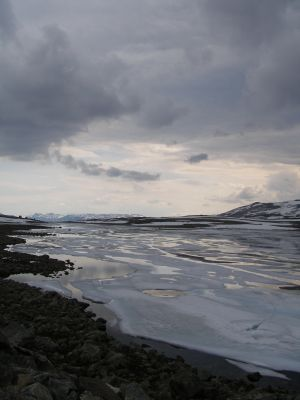
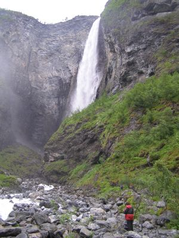

| Home | Kontakt | Steckbrief |
| Wandern/Trekking |
| Klettern/Klettersteige |
| Kanu |
| Fahrradtouren |
|
| Rucksack-Reisen |
| Touren mit Kindern |
| Wissenswertes |
In der Rubrik Rucksack-Reisen befinden sich Touren des Veranstalters
Rucksack-Reisen, die ich als Tourbegleiter betreut habe.
Norwegen - Von Hütte zu HütteEigentlich hab ich mich schon innerlich darauf eingestellt, auch 2006 wieder für den sympathischen Reiseveranstalter Rucksack-Reisen aus Münster in Schweden unterwegs zu sein. Wenige Wochen vor der Abreise erfahre ich aber, dass es dieses Jahr eine Bullirundreise durch Norwegen sein soll, die ich begleiten darf. Auch gut. I hytta heißt die Tour im Katalog. Wird halt nicht im Zelt geschlafen, sondern in festen Hütten und die Essenszubereitung auf dem Lagerfeuer muß ein Glasceranfeld übernehmen.30.06.2006: Es geht los. Von Münster fahren wir nach Zwischenstopp in Bremen und Hamburg, wo weitere Gäste zusteigen, mit dem Reisebus über die Vogelfluglinie (Puttgarden-Rodgy, Helsingborg-Helsingor) nach Schweden. Das Camp in Stömne (Schweden) 01.07.2006: Gegen 8 Uhr treffen wir im schwedischen Camp in Stömne (Värmland) ein. Nach dem Frühstück wird es kurz hektisch. Die Gäste wollen wissen, wie es weiter geht und wann wir endlich mit dem Bulli losfahren. Ich muß erst das Material zusammensuchen und gemeinsam beschliessen wir, welche Lebensmittel mitgenommen werden und was im Camp verbleibt. Dieses Mal findet sich sogar jemand für das Corned Beaf. Da es sich um eine Kleinbusrundreise handelt, kommen wir natürlich täglich an Geschäften vorbei, wo wir fehlendes nachkaufen können. Um 11 Uhr ist es dann so weit und ich fahre mit meinen Gästen Nina, Karin, Anne, Maria, Karin und Norbert nach Oslo. Zweimal Karin. Das vereinfacht das erlernen der Namen für mich ja ungemein. In Oslo sollen morgen noch Sophie und Tilo zu uns stoßen, die die Eigenanreise per Flieger der Busfahrt vorgezogen haben. Wir treffen nachmittags in Oslo ein und nachdem wir die Maut für die Fahrt in die Innenstadt bezahlt haben checken wir im für uns reservierten Anker Hotel ein. Jeder erkundet erst einmal bei strahlendem Sonnenschein die Stadt für sich und um 18 Uhr treffen wir uns wieder in der Hotellobby um gemeinsam zum Abendessen zu gehen. Sophie und Tilo sind auch wie vereinbart dort und können uns schon ihre Eindrücke von der Stadt berichten, da sie schon zwei Tage hier sind. Wir entscheiden uns für Stortorvets Gjestgiveri nahe der Domkirche, da es einen netten Biergarten im Innenhof hat und für Osloer Verhältnisse relativ preiswert ist. Abends schlendern wir noch an Aaker Brygge entlang, dem Szene Treffpunkt in Oslo, wo sehen und gesehen werden Programm ist. Aaker Brygge vom Wasser aus gesehen 02.07.2006: Heute haben wir noch bis 13 Uhr in Oslo zur freien Verfügung. Der größte Teil der Gruppe besucht Vigelandsparken. Dort stehen die Skulpturen von Gustav Vigeland. Neben Edvard Grieg, Edvard Munch und Thor Heyerdal einem der berühmtesten Norweger. Skulpturenpark Vigeland Wir beschliessen vom Museum zu Fuß am Schloß vorbei zum Hotel zu gehen und um 13 Uhr entern wir alle das Fahrzeug für unsere 14 tägige Rundtour Richtung Norden. Nachdem wir uns aus dem Straßenwirrwarr der Innenstadt herausgearbeitet haben, geht es dann auch etwas flüssiger. Ein Vorteil ist es mit Sophie und Tilo zwei ausgebildete Landvermesser als Beifahrer zu haben. So landen wir nach einigen Foto- und Kaffeestops gegen 19 Uhr in Steinklepp nahe Borgund, wo zwei Hütten für uns reserviert sind. Unsere Hütte für eine Nacht Die kleinere der beiden Hütten nutzen wir nur zum schlafen, während wir in der größeren Hütte unser Abendessen kochen. Da wir am ersten Abend keine Experimente machen wollen und es schon recht spät ist, gibt es als Vorspeise einen frischen Salat und nachher Kartoffelpüree mit Erbsen, Möhren und Gulasch. Abends spielen wir noch eine Runde Kubb . 03.07.2006: Wir fahren etwa 10 Kilometer und kommen an der Stabkirche von Borgund an. Borgund Stabkirche Sie gilt als eine der schönsten, da sie noch im Ursprungszustand erhalten ist und nicht wie viele andere Stabkirchen im Laufe der Jahre verändert wurde. Etwa um 1150 wurde die Kirche erbaut. Wir kaufen Eintrittskarten für die Kirche, machen aber erst einmal eine kleine Wanderung auf einem historischen Weg. Dem Vindhellavegen. Dieser Weg ist beeindruckend angelegt. Serpentinen aus Trockenmauern mit einer Maximalsteigung, die von Pferdefuhrwerken bewältigt werden kann. Historisch muß dieser Weg mindestens eine Speerlänge breit sein und von den Bauern der Umgebung gepflegt werden. Vindhellavegen Die Rundtour ist ungefähr 6 Kilometer lang und hat nur geringe Steigungen. Nach der Runde besichtigen wir die Stabkirche und fahren dann weiter nach Laerdal. Dort besteht die Möglichkeit, das Lachsmuseum oder die Altstadt zu besichtigen. Von Laerdal brechen wir nachmittags Richtung Aurland auf. Es gibt zwei Möglichkeiten. Entweder die sehenswerte Paßstraße oder den neuen 25 Kilometer langen Tunnel. Wir entscheiden uns für die Paßstraße, denn wir wollen ja etwas von der Landschaft sehen.

Eis und Schnee Auf der Paßhöhe haben wir dann auch ersten Schneekontakt und oberhalb von Aurland gibt es einen spektakulären Aussichtspunkt mit Blick auf den Aurlandfjord. Dort sollte man auf jeden Fall anhalten und sich auch trauen, bis vorne an die zerbrechlich wirkende Glasscheibe heranzugehen. Die Toilette mit Fjordblick ist auch einen Besuch wert. Spektakulärer Aussichtspunkt Übernachtet haben wir wieder in einer landestypischen Hütte unweit von Aurland. 04.07.06: Wir brechen früh auf, denn heute wollen wir mit der Touristenfähre von Gudvangen nach Kaupanger durch den Naeroyfjord in den Sognefjord. Die Fahrt nach Gudvangen geht dank einiger Tunnel schneller als befürchtet, und so sind wir rechtzeitig für die 12 Uhr Fähre dort. Wichtig, denn so scheint die Sonne steil in den engen Fjord. Sonne haben wir an dem Tag auch genug. Das Wetter passt perfekt und deshalb steht einer ruhigen Fahrt durch den an seiner schmalsten Stelle 250 Meter breiten Fjord an steilen Felswänden vorbei nichts im Wege. 
Auf dem Naeroyfjord Unser Ziel für heute ist Hafslo. Dort übernachten wir ebenfalls in Hütten. Bleiben eine Woche vor Ort und unternehmen Tagestouren. 05.07.06: Wir besteigen den Molden, einen 1116 Meter hohen Berg, von dessen Gipfel man einen schönen Blick auf blaugrüne Fjorde hat. Blick vom Molden Leider ist das Wetter etwas diesig und es ist sehr heiß. Zur Abkühlung wartet aber der See vor unserer Hütte in Hafslo auf uns, der niedrige zweistellige Temperaturen hat. 06.07.06: Heute wollen wir uns erstmal einem Gletscher nähern. Wir fahren die schmale Straße von Hafslo weiter ins Tal hinein. Am Ende ist ein wenig Maut zu entrichten. Von einem kleinen Parkplatz starten wir unsere Tour zum Austerdalsbreen, einem Seitenarm des großen Jostedalsbreen. Es geht durch ein lang gezogenes Trogtal bis zum Gletscher. Am Austerdalsbreen Man sollte etwas Abstand vom Gletscher einhalten, da dort erstens Seracs abbrechen können und das Gelände zweitens steinschlaggefährdet ist. 07.07.06: Wir sind ja nun theoretische Gletscherprofis und so buchen wir eine dreistündige Blaueistour auf den Nigardsbreen, einem anderen Seitenarm des Jostedalsbreens. Eine spektakuläre Tour mit Betreuung durch einen Gletscherguide, bei der nicht jeder Teilnehmer überzeugt war, dass wir dort wieder heil hinunter kommen. Mit umgerechnet 55 Euro inklusive Bootsfahrt zum Gletscher keine billige Sache aber ein tolles Erlebnis, das entweder Lust auf mehr machte, oder andere überzeugte Eis in Zukunft nur noch im sitzen mit Sahne zu genießen. Auf dem Nigardsbreen 08.07.06: Da sich bei Anne die Sohle der Trekkingschuhe in Wohlgefallen aufgelöst hat und unsere Reparaturversuche mit Kleber nicht von Erfolg gekrönt sind, fahren wir nach Gaupne, um neue Schuhe zu kaufen. Die Schuhe haben wir dann direkt mit einer Wanderung oberhalb des Ortes eingeweiht. Wir sind ins Engjadalen, an der DNT Hütte Navarsete vorbei, hineingewandert und am Ende des Tales hoch bis zum See Heggdalsvatnet. Dann geht es über den Seeabfluß weglos einen Hang hinunter, bis man an einigen Schafalmen ankommt. Von dort geht der Weg dann wieder zurück zum Auto. Schafe verfolgen uns am Heggdalsvatnet 09.07.06: Heute fahren wir etwas weiter, und zwar bis nach Hjelle. Von dort wandern wir bis zum Vettisfossen. Der Wasserfall, der mit 275 Metern die größte Freifallhöhe hat. Zuerst ist es noch ein bequemer Fahrweg, aber kurz vor dem Wasserfall wird der Weg ein wenig interessanter. Leider ist es nicht einfach, den Wasserfall komplett zu sehen und wir verzichten wegen des Regens auf eine Klettereinlage.

Der Vettisfossen 10.07.06: Ruhetag. Zumindest für die meisten. Drei wackere Gäste wollen auch heute wandern und werden von mir in der Wildnis ausgesetzt. Mit dem Rest fahre ich nach Kaupanger und wir kaufen für unser Hafslo-Abschiedsgrillfest zwei Lachsforellen und andere Köstlichkeiten. Nebenbei besichtigen wir das sehenswerte Sogne Fjordmuseum in Kaupanger und genießen in Sognedal norwegisches Kleinstadtflair. Welches Bild könnte mehr Ruhe ausstrahlen als der See vor unserer Tür 11.07.06: Wir verlassen Hafslo und fahren auf der Sognefjellstraße Richtung Lom. Unterwegs gibt es auf dieser höchsten Paßstraße Norwegens viel zu sehen und so halten wir häufig. Leider ist uns das Wetter nicht wohl gesonnen und so gibt es keine Fernblicke auf die umliegenden Berge. An der Sognefjellstraße auf dem Weg nach Lom In Lom machen wir zwei Stunden Pause und kaufen in der dortigen viel gelobten Bäckerei ein Brot. Besser als unser selbstgebackenes ist es aber auch nicht. Zumindest an unsere Kombination mit Salami und Käsewürfeln kommen die lokalen Bäcker nicht heran. Von Lom aus fahren wir noch bis nach Heidal an dem Fluß Sjoa, wo wir Hütten für zwei Nächte haben. Die Sjoa ist ein bekannter Wildwasserfluß und Karin, Nina, Karin und Norbert beschließen, sich am nächsten Tag einem Raftingveranstalter anzuvertrauen. Von einem lokalen Veranstalter (gorafting) erfahre ich telefonisch, dass er am nächsten Tag um 15 Uhr für uns zur Verfügung steht. Nach dem Abendessen gehen wir noch zu Fuß zur Sjoa, die einige 100 Meter hinter unserer Hütte entlang fließt, und vier Leute werden etwas blaß um die Nase. Ganz schön weiß das Wasser. 12.07.06: Wir nutzen den Vormittag, indem wir einige Kilometer bis zum Rittersprung fahren. Der Rittersprung (Ridderspranget) ist eine schmale Stelle, an der die Sjoa durch eine Art Klamm schießt. Die dahinter stehende Sage inklusive vieler Fotos ist hier recht gut beschrieben. Heute ist es allerdings verboten, über die Schlucht zu springen. Am Rittersprung Auch wenn es nicht so aussieht, wir haben uns dran gehalten. Zur Mittagszeit haben wir uns getrennt. Mit Nina, den beiden Karins und Norbert bin ich zum Raftingveranstalter gefahren. Der Rest der Gruppe ist weiter an der Sjoa entlang gewandert und fand per Zufall das Angebot einer Elchsafari, ausgehend vom Campingplatz in Randsverk. Rafting auf der Sjoa Die Safari startet um 22 Uhr und geht bis Mitternacht. Anne, Sophie und Tilo haben immerhin etwa 10 Elche gesehen. Ein guter Schnitt, denn während der 14-tägigen Rundtour haben wir nur Elchschilder und Elchshit gesehen. 13.07.06: Wir verlassen Heidal Richtung Lillehammer. Das Wetter ist prächtig und wir haben Zeit. Wir beschließen, nicht die E6 nach Lillehammer zu fahren, sondern in Harpefoss auf den Peer-Gynt-Weg abzubiegen. Eine gute Entscheidung. Die Straße ist zwar mautpflichtig und mit Schlaglöchern übersäht, aber die Fernsicht von dort oben ist grandios. Man kann gleichzeitig Jotunheimen und Rondane sehen. Auf dem Peer-Gynt-Weg Wir machen eine kleine Wanderung zu einem Aussichtsberg. Der Wind ist so stark, dass man sich locker dagegen lehnen kann. Am frühen Nachmittag erreichen wir Lillehammer. Wir parken am Freilichtmuseum Maihaugen und teilen uns auf. Ein Teil der Gruppe besucht das Freilichtmuseum und ein Teil erkundet die Innenstadt. Abends fahren wir zur Übernachtung nach Nordseter, etwas nordöstlich von Lillehammer, wo ein Appartement für uns gebucht ist. 14.07.06: Heute fahren wir von Lillehammer nach Oslo. Die Fahrt über die E6 ist unspektakulär. In Oslo angekommen trennen, sich die Wege. Ein Teil fährt zum Holmenkollen, ein Teil besucht einige Museen auf der Museumsinsel Bygdoy. Abends streifen wir durch Grünerlökka und genehmigen uns ein teures Bier. Wieder in Oslo. Hafen mit Rathaus. 15.07.06: Große Verabschiedung. Die Eigenanreiser bleiben in Oslo. Der Rest fährt mit mir zurück über die Grenze nach Schweden und zurück zum Camp nach Stömne. Den restlichen Tag bis zur Abfahrt des Reisebusses nutzen wir, um auf dem vor der Haustür liegenden See ein wenig Kanu zu fahren. Gegen 18 Uhr fährt der Bus in Richtung Deutschland. Am nächsten Tag werden wir zur Mittagszeit wieder in Münster sein. Links: Seite des Reiseveranstalters Anbieter der Elchsafari Veranstalter des Raftings auf der Sjoa Sogneford Homepage Zahlreiche Tageswanderungen in Norwegen |